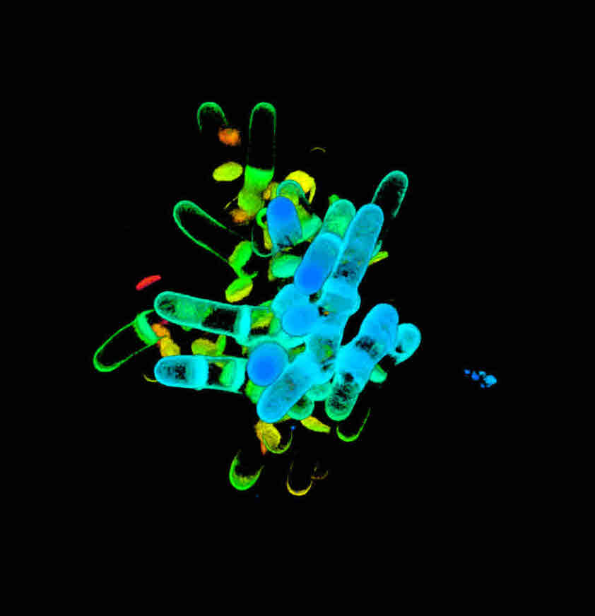
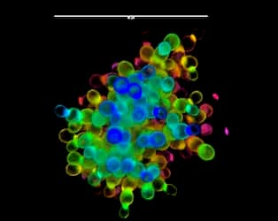

The Pando Clone
Fish Lake National Forest
I am currently a PhD student at the Georgia Institute of Technology, studying interplays between ecology and evolution in the Ratcliff lab. I want to understand the processes leading to the evolution and maintenance of diversity on Earth in our leafy friends.


When I am not working hard trying to describe the beauty around us, I simply immerse in it. I will be climbing, running, painting and taking pictures.
Graduate Program in Quantitative Biosciences, Georgia Institute of Technology
I am a PhD. student in Quantitative Biosciences, interested in describing the processes shaping today's complex biodiversity.
Georgia Institute of Technology, School of Biological Sciences
"Evolution in real time: insights from micro- to macroscopic multicellular organisms"
Advisor: Prof. William Ratcliff
Emory University, School of Dermatology
"Chemical characterization and anti-bacterial properties of plant extracts"
Advisor: Prof. Cassandra Quave
University of Sciences II, Montpellier
"Characterization of components of signaling pathways
activated downstream pathogen perception in Arabidopsis thaliana"
Advisor: Prof. Zhang
University Pierre and Marie Curie, Roscoff
How did ecosystems become the diverse and complex systems that we can see today? How do species form and coexist? What adaptation allow plants to survive at high altitudes?
I walked with these questions in my teens.
They are the ones that guided me in choosing an academic path in biology,
and they still accompany me as I learn to raise even more questions.
Below are descriptions of the three main chapters of my PhD., two currently submitted and one still in prep.
 Multicellular groups can evolve through multiple developmental modes, but a common step is the formation of permanent cell-cell attachments after division. The characteristics of the multicellular morphology which emerges has profound consequences for the subsequent evolution of a nascent multicellular lineage, but little prior work has examined these dynamics directly. Here we examine a widespread yet understudied emergent multicellular morphology: cuboidal packing. we used settling selection to favor the evolution of simple multicellularity in unicellular, spherical Schizosaccharomyces pombe yeast. Multicellular clusters with cuboidal organization rapidly evolved, displacing the unicellular ancestor. --> check out the full story here !
The transition from unicellularity to multicellularity fundamentally re-shaped the development of life on Earth. The emergence of this level of individuality comes with both intra-organismal and ecological consequences. We simplify complex ecological environments by studying a simple multicellular system, 'snowflake yeast' in controlled conditions. We find colonization of open ecological niches could have predated the acquisition of key characteristic features of complex multicellularity (cell communication and tissue differentiation). In our system, the simple but fundamental transition to multicellular is sufficient to promote diversification and niche specialization. --> check out the full story here !
Trembling aspen, also known as quaking aspen (Populus tremuloides) is the most widely distributed tree in North America.
Like many plants, it can propagate vegetatively by sending roots from which new clonal stems grow.
Individual stems can live 40-150 years, however, clones are able to regenerate themselves
from the root stock. In other words, while a stem lifespand does exceed 100 years, the organism can be older than its parts.
The Pando clone is a giant version of the clonal spreading charasteristic to the species, covering 43 ha in Fishlake National Forest (Utah).
Leveraging genetic information from the leaves of the clone (and soon the roots!), we study the spatial and temporal development of the Pando clone
in collabotation with Karen Mock
and Zach Gompert (Utah State University).
More to come soon!
{kind=link}